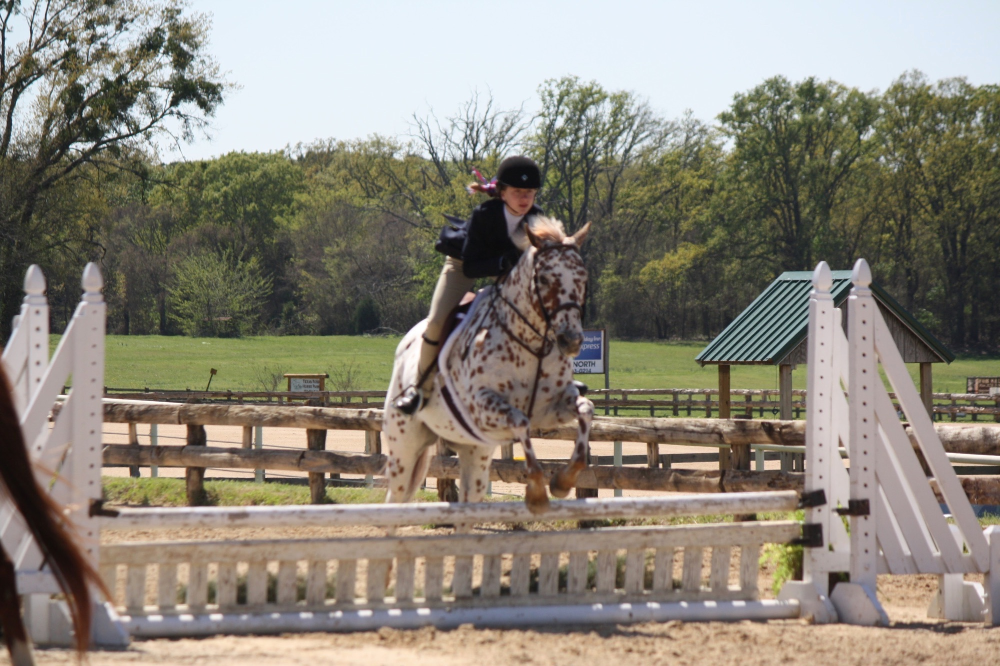
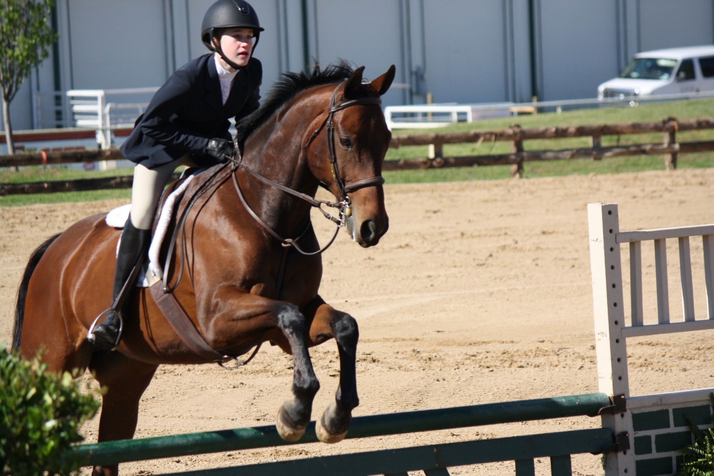
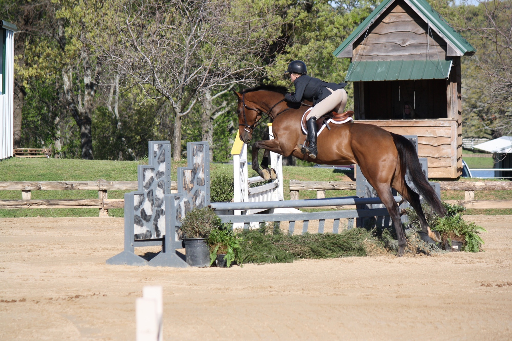
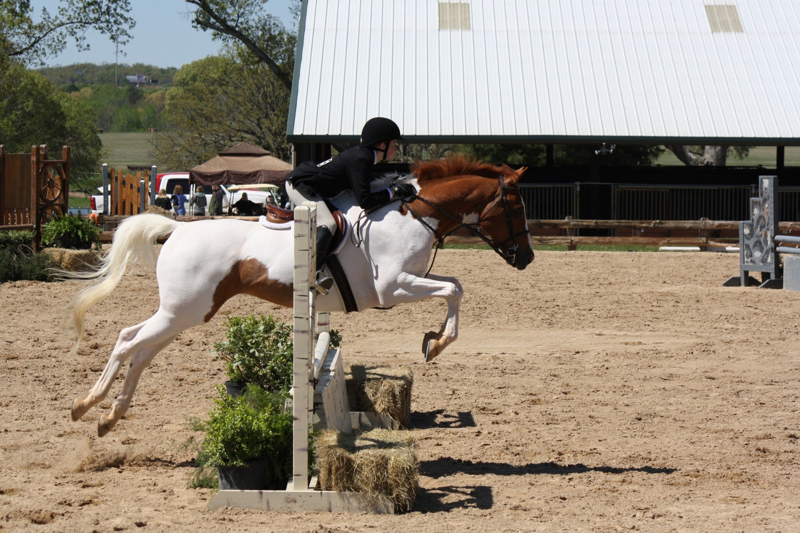
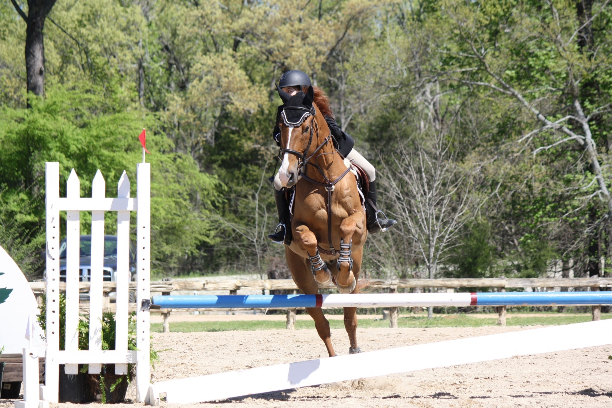
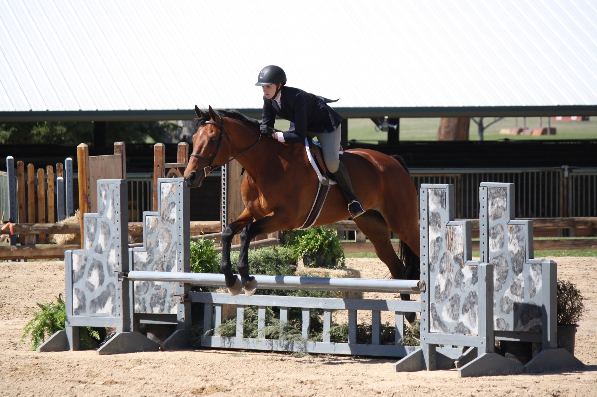
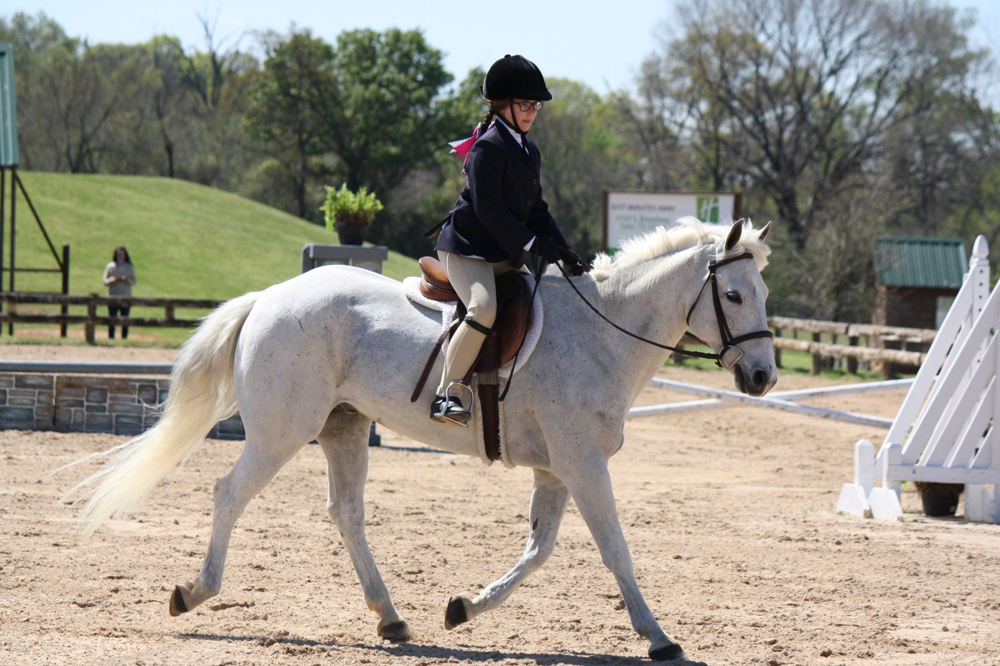
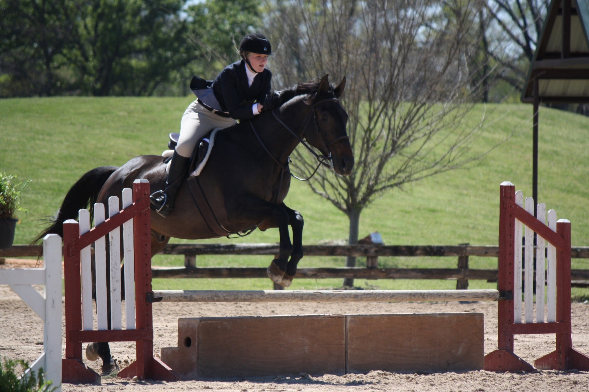
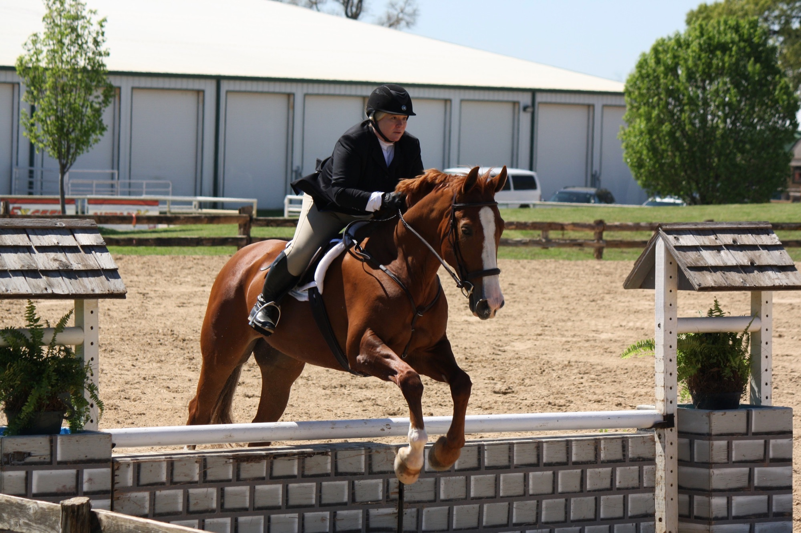

Congratulations to all Bridlewood riders who competed at the Dallas Hunter Jumper Scholarship
Circuit Season Opener in Tyler, TX! Some highlights include:
Codak Moment and Taylor Radack
- 2nd in the Ring 2 Equitation Challenge
- 4th in the $250 2’-2’3” Hunter Classic

Harlequin Romance and Julia Breidenbach
- 5th in the $1000 Hunter Derby
- 3rd in the Ring 1 Equitation Challenge
- 2nd in the 2’6” equitation

Here I Am and Shann Cranford
- Good ribbons in the 2’6” Baby Greens

Motion Picture and Caitlin Fleisher
- Blue ribbon winner in 2’6” Junior/Amateur hunter and equitation

Polaris and Alexis Rivera
- Champion in Puddle Jumpers
- 2nd in the $250 2’6” Jumper Classic
- 2nd in the Ring 1 Equitation Challenge

Ringo Starr and Ashleigh Jooste
- Blue ribbon winner in 2’6” Junior/Amateur hunter division

Silver Star’s Jumpin Jack and Rylea Templan
- Blue ribbon winner in walk/trot and walk/trot canter crossrails

The Big Easy and Hannah Smith
- Successful ribbons in the 2’3” junior/amateur division

The Cajun Queen and Kim Williams
- Reserve Champion in 2’6” Junior/Amateur
